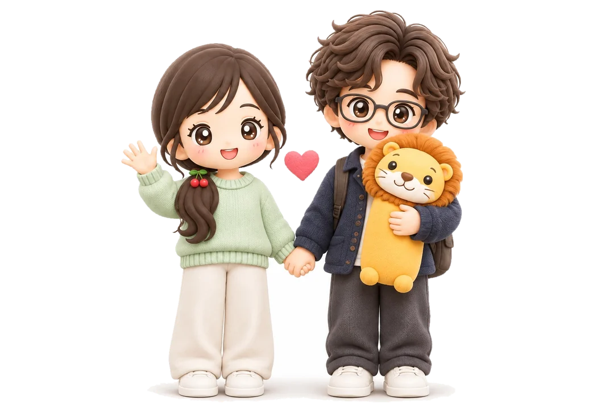
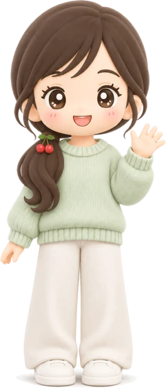
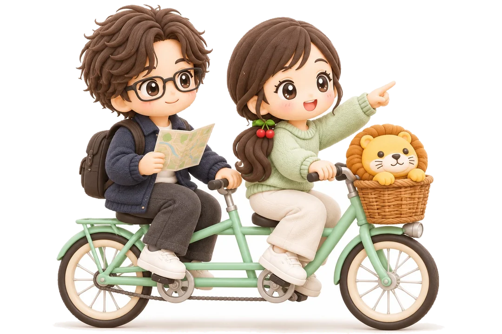
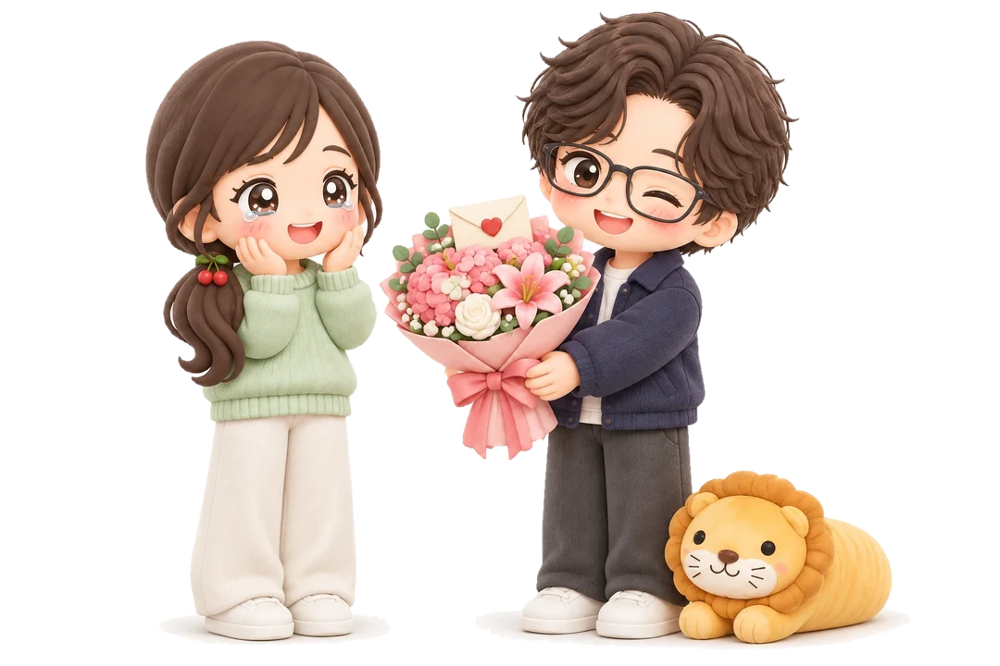

🚲 ちょるさん
未来志向2位。「まずやってみよう」が出やすいのかもしれません。
🍒 ちょる × min 🦁
うまくいく日も、すれ違う日も。資質をならべて、ふたりの「こうかも？」を集めました。おしゃべりのタネにしてください。

行くよー！うん、気をつけてねまず、ならべてみます
資質を押すと、ふたりの中で光ります。おそろいは「目標志向」と「内省」の2つです。


たとえるなら、こんなふたり？

未来志向2位。「まずやってみよう」が出やすいのかもしれません。
慎重さ3位。「ちょっと確かめよう」が出やすいのかもしれません。もちろん、前後を交代する日もあるはずです。
💐 うまくいかない日に、起きたこと

副業を始めて、はじめて大きな壁にぶつかったちょるさん。しくしく泣く日がありました。

元気が出るようにと、花束と素敵なお手紙が届きました。

ちょるさんは「人に恵まれている」とかみしめて、また歩き出しました。
彼は言葉選びがとても丁寧でちょるさんのつぶやき（11/15）より
いい日も、そうでない日も
資質から想像した場面です。逆のことも、もちろんあります。「うちは違うよ」がいちばん面白い話のタネです。
うまくいく時ちょるさんが夢を広げて、minさんが足元を確かめる。夢と現実の両方がそろいやすい時です。
よくある違い「やってみたい」も「確かめたい」も、未来を大事にする気持ちです。
こんな一言が効くかも「いまは夢の話？確認の話？」と先に聞いてみる。
うまくいく時決めた形で安心するちょるさんと、変化を楽しめるminさん。暮らしに芯と余白が両方あります。
よくある違い計画を大事にしたい人と、その場を大事にしたい人の違いです。
こんな一言が効くかも「ここだけは守りたい」を1つ教え合う。
うまくいく時はっきり話すちょるさんと、着地点を探すminさん。話がこじれにくい組み合わせかもしれません。
よくある違い片方は「今話したい」、もう片方は「少し落ち着きたい」となりやすいです。
こんな一言が効くかも「今話す？少しあとにする？」と聞いてみる。
うまくいく時がんばるちょるさんの変化に、minさんが気づきやすい時です。
よくある違い「まだやりたい」と「もう休んでほしい」がすれ違いやすいです。
こんな一言が効くかも「今日は何もしない日」を、ふたりで先に決める。
うまくいく時ちょるさんが新しい出会いを運んで、minさんがその中の人と深くつながれる時です。
よくある違いたくさん会って元気になる日と、少人数で元気になる日があります。
こんな一言が効くかも「今日は何人くらい？途中で帰ってもいいよ」と先に話す。
すれ違ったあとに
すぐ答えを出さなくても大丈夫。それぞれ考える時間をとってみる。
話しにくい日は、書いて渡すのもふたりらしい方法かもしれません。
「で、次はどうしよう？」を、小さく1つだけ決めてみる。

毎日ひらきたくなる
相手の「そこ好き」を、具体的に1つ伝えましょう。